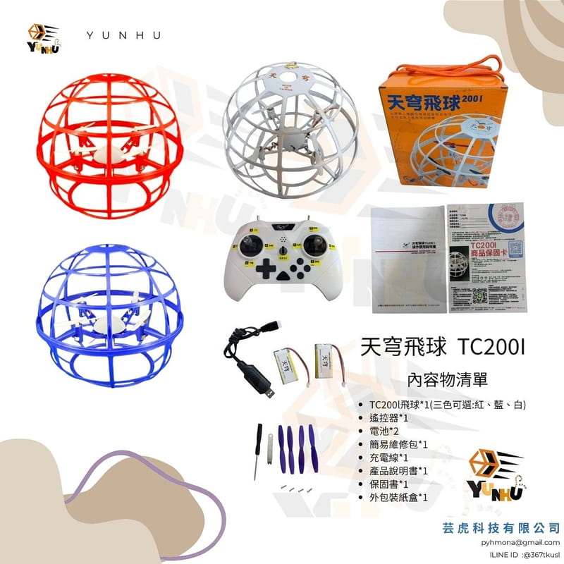
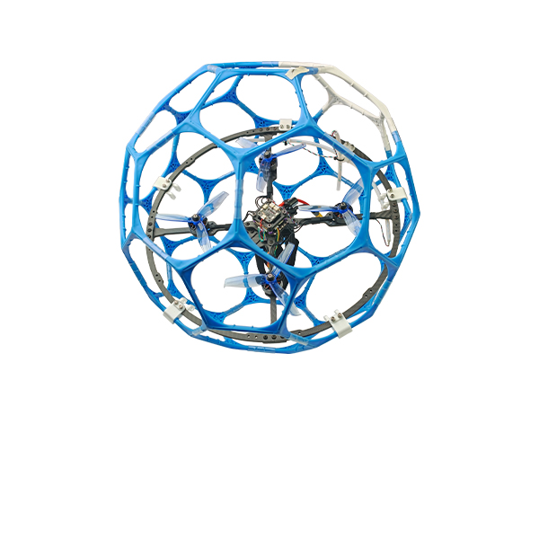
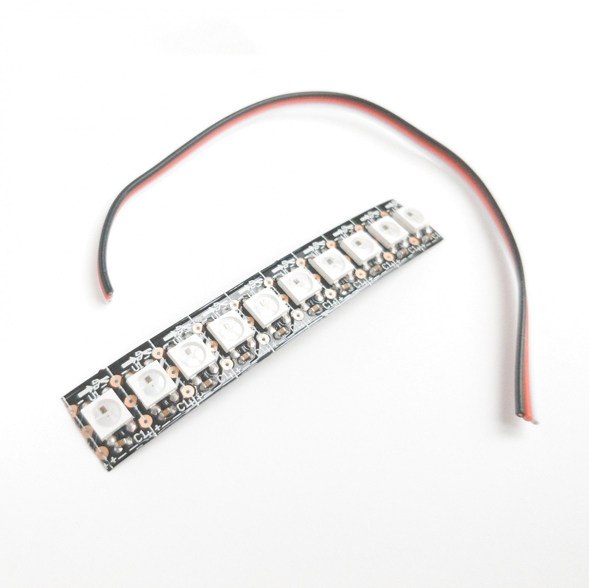
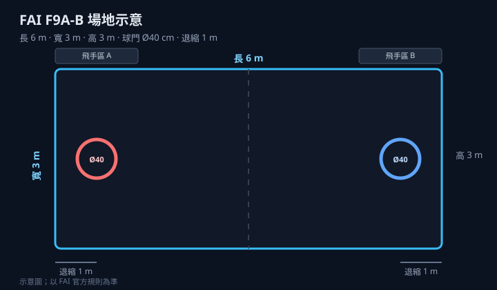
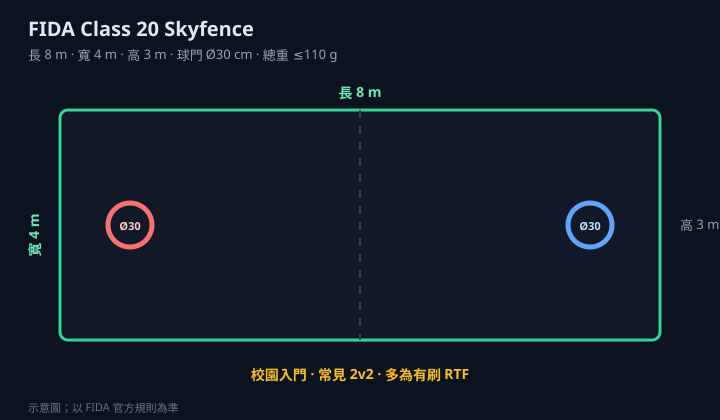

機種差很大，不要只聽「20 cm」
右邊有刷套件多半對應 FIDA Class 20；本隊無刷自組（馬達／4S／300 g）對應 FAI F9A-B。下面表格把數字並列，課堂先投影場地圖再讀表。

FAI：無刷球機
FAI LED 燈條FAI（國際航空運動總會）把無人機足球編成正式航空運動項目，代號 F9A。本隊組無刷機、刷 Betaflight、衝 ≤300 g，走的是這條線的 F9A-B（約 20 cm 球）。台灣對接 FAI 的窗口常聽到 CTAF（飛行運動總會）與國家證照體系。
FIDA（國際無人機足球總會）推動休閒／教育／職業聯賽實務，機種常稱 Class 20／Class 40（約 20 cm／40 cm）。校園常見的有刷空心杯 RTF、定高遙控，多半對應 Class 20（≤110 g）。台灣推廣端也會聽到 CDSA 等對接 FIDA 的單位。
最重要的一句：兩邊都有「20 cm 球」，但重量、場地、球門、射手人數、能不能改裝都不一樣。聽老師說「去打 20 cm」時，一定要再問清楚是 FAI 還是 FIDA。
左邊是本隊主力 FAI F9A-B；右邊是校園入門常見 FIDA Class 20。表後另有 F9A-A／Class 40 補充。

FAI F9A-B 場地（點圖放大）
FIDA Class 20 場地（點圖放大）
右邊有刷套件多半對應 FIDA Class 20；本隊無刷自組（馬達／4S／300 g）對應 FAI F9A-B。下面表格把數字並列，課堂先投影場地圖再讀表。

FAI：無刷球機
FAI LED 燈條| 項目 | FAI（本隊：F9A-B） | FIDA（常見：Class 20） |
|---|---|---|
| 組織全名 | Fédération Aéronautique Internationale 國際航空運動總會 | Federation of International Dronesoccer Association 國際無人機足球總會 |
| 規則名稱 | Sporting Code · Volume F9 · F9A | Dronesoccer Rule Book（Class 20／40） |
| 本頁對應子級 | F9A-B（另有 F9A-A 大型組） | Class 20（另有 Class 40 大型組） |
| 球徑 | 20 cm +2 cm（須裝進 Ø22 cm 量測圈） | 20 cm ±1 cm |
| 比賽總重 | ≤300 g（含電池與全部裝備） | ≤110 g（含電池、接收） |
| 場地（建議／規定） | 飛行區約 6 m × 3 m × 高 3 m | Skyfence 8 m × 4 m × 高 3 m |
| 球門 | 內徑 40 cm（外徑建議 70 cm）；底線內側約 1 m | 內徑 30 cm ±1 cm（外徑約 50 cm）；中心高 1.8–2.2 m |
| 外框單面開口 | ≤150 cm² | ≤70 cm² |
| 場上人數 | 3–5 人（主辦公告）；雙方人數相同 | 原則 5 人；最少 3 人可開打 |
| 可得分射手 | 僅 1 名 | 最多 2 名 |
| 電池（實務） | 最高 4S；單芯滿電 ≤4.25 V | 常見 2S 約 7.4 V／450 mAh（規則以重量為主） |
| 螺旋槳 | ≤76 mm；禁止金屬槳 | 以官方／認證球機為準 |
| LED | 主條 ≥16；後燈 ≥6；射手尾燈＝對方隊色 | 紅／藍可辨；射手須另有標示 |
| 改裝 | 可自組，但須符合規格與 fail-safe 等 | Class 20 禁止為提升性能改裝 |
| 常見機種 | 無刷自組／競技機（本站馬達、飛控頁） | 有刷空心杯 RTF（BALKIN、天穹飛球等） |
| 官方入口 | fai.org | dronesoccer.org |
大型組也別混： FAI F9A-A ≈ 40 cm 級、籠建議 14×7×高 5 m、門內徑 60 cm、電池可至 6S； FIDA Class 40 ≈ 40 cm ±2 cm、≤1100 g、場約 16×7 m、門內徑 60 cm。 兩邊都是「大球」，數字仍不完全相同。
依據 FAI Sporting Code Section 4, Volume F9 Drone Sport（2026 版）。爭議以英文原文與主辦公告為準。
| 子級 | 球框 | 總重 | 電池 | 槳 | 主 LED | 本隊？ |
|---|---|---|---|---|---|---|
| F9A-B | 20 cm +2 cm（Ø22 cm 圈） | ≤300 g | ≤4S（≤17 V） | ≤76 mm | ≥16 | 是（主力） |
| F9A-A | 約 40 cm 級 | 較重（見原文） | 可至 6S | 較大（見原文） | ≥40 | 大型場／進階 |
| F9A-C（中國聯賽常見） | 約 10 cm | ≤27–30 g | ≤4.35 V 級 | 約 42 mm | ≥4 | 參考用 |
下面每一條都用「規則在說什麼 → 你要做什麼」寫給新手：
賽前送檢、賽中可抽查；合格後貼標示。未通過規格＝不能上場。
本場賽事規定（以主辦公告為準）：每組檢錄上限「球機 5 顆、電池 9 顆」。 送檢時就要決定帶哪 5 機、哪 9 電；未檢錄的機／電不得上場。 （FAI 世界賽級 F9A-B 常見每隊可備較多機，僅供對照。）
建議分配：攻擊 1–2＋硬防 1–2＋輕防／備機 1；電池 9 顆支應約 3 個 set 的換電。電池編號並記錄滿電電壓（≤4.25 V／芯）。
| 檢錄項目 | 合格標準（F9A-B） | 新手實務建議 |
|---|---|---|
| 總重 | 含外框＋電池＋全部裝備 ≤300 g | 用「要上場那顆電」實秤；目標 ≤295 g |
| 外徑 | 20 cm +2 cm，須裝進 Ø22 cm 圈 | 自備 22 cm 環預檢 |
| 突出物 | 球框外不可有任何突出 | 檢查天線、槳尖、螺絲頭 |
| 框架 | 塑膠／複材，禁金屬；底平面 ≤2 cm；單開口 ≤150 cm² | 金屬骨架直接不合格 |
| 馬達 | 僅電動，最多 4 顆 | — |
| 電池電壓 | 最高 4S；單芯 ≤4.25 V | 每 set 前可量；勿充到 4.35 V 上場 |
| 螺旋槳 | ≤76 mm；禁金屬槳 | 卡尺量；邊緣擦到 76 mm 的行銷槳勿冒險 |
| LED | 主 ≥16；後 ≥6；隊色／射手色正確 | 通電檢查；換射手要改尾燈 |
| Fail-safe | 觸發後馬達立即停止 | 關遙控／斷訊實測 |
| 禁裝 | 無預編程機動、無自動定位 | 烏龜模式允許 |
時程概念：賽前正式檢錄並標示 → 起飛前可再檢查 → 每 set 前可量電壓 → 賽中可抽查。備機未上場不裝電池；換機／換電多半只在 set 間。地方賽程序可簡化，但規格數字仍要過。
以下指「電壓級距可落在 ≤4S」；仍須整機過秤、過槳徑、過 LED。
 1507
1507 DYH1408
DYH1408 1408
1408 1404.5
1404.5| 馬達 | 常用電壓 | F9A-B |
|---|---|---|
| 火神 VCI 1507 4000KV | 4S | ✓ |
| T-HOBBY DYH1408 3988KV | 4S | ✓ |
| 火神 VCI 1408 3900KV | 4S | ✓ |
| 火神 VCI 1404.5 4600KV | 3S（原廠測功） | ✓ |
| 火神 VCI 1404 4500KV | 3S | ✓ |
| RCinpower GTS V3 1404+ | 3–4S | ✓ |
| LANNRC 1404 4600KV | 2–4S | ✓ |
| SIRIUS 1404／1505 系列 | 3–4S | ✓ |
| P1604 3800KV | 4S | ✓（須配合 ≤76 mm 槳） |
依據 FIDA Dronesoccer Rule Book（Class 20 以 2025-10-01 修訂為準）。完整攻防、越位、點球罰則見 有刷／空心杯專頁；此處先把「規格與差異」講清楚。
Class 20 的設計目標是：較小場地、較輕球機、較容易在教室或活動中心架起來打。實務上很多隊伍使用有刷空心杯 RTF（開箱即飛），但規則書驗的是重量與外形等規格，並禁止為提升性能而改裝。
| 項目 | Class 20 規定 | 和 FAI F9A-B 差在哪？ |
|---|---|---|
| 球徑 | 20 cm ±1 cm | FAI 用「+2 cm／Ø22 cm 圈」量法 |
| 重量 | ≤110 g | FAI 是 ≤300 g（幾乎三倍） |
| 場地 | 8 m × 4 m × 高 3 m | FAI 建議 6×3×3 m（較小） |
| 球門內徑 | 30 cm ±1 cm | FAI 建議 40 cm |
| 單面開口 | ≤70 cm² | FAI ≤150 cm² |
| 射手 | 最多 2 名可得分 | FAI 僅 1 名 |
| 改裝 | 禁止性能向改裝 | FAI 允許自組但須合規 |
| 同場機種 | 同場不得混用不同型號球機 | FAI 以規格合規為主 |
| 賽制時間 | 常為 3 set × 3 分鐘（主辦可改） | 依 FAI／主辦公告 |
| 項目 | FIDA Class 40 | 對照 FAI F9A-A（大型） |
|---|---|---|
| 球徑 | 約 40 cm ±2 cm | 約 40 cm 級 |
| 重量 | ≤1100 g | 依 FAI 原文子級限制 |
| 場地 | 約 16 m × 7 m（約 2:1） | 建議籠 14 m × 7 m × 高 5 m |
| 球門內徑 | 60 cm | 建議 60 cm（外徑建議 100 cm） |
| 人數／射手 | 原則 5 對 5（細節見 FIDA 規則） | 3–5 人；僅 1 射手 |
Class 40 與 F9A-A 都是「大球場」，但場地尺寸、電池上限、射手規則仍可能不同。打大型賽前請下載當屆 FIDA／FAI 原文，不要只背這張摘要表。
本頁為教學整理；正式裁決以各協會最新原文與當屆主辦技術公告為準。